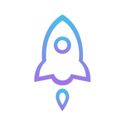

iOS用户指引
1.下载并安装Shadowrocket(本应用无法从中国区App Store下载):

2.进入Shadowrocket，点击配置->远程文件->添加配置。而后在框中输入如下:
https://yk.gzhpxb.com/pac/youku.conf
然后点击"下载"。
3.点击"远程文件"下的链接，选择"使用配置":

4.返回首页，点击右上角的"+"，然后按如下填写:
a.类型: Subscribe
b.URL: https://yk.gzhpxb.com/node
c.备注为可选项，可不填或任意填写:
点击"完成"。
5.在设置->订阅中将"打开时更新"打开，然后返回首页。
6.服务器可任选，然后打开连接开关即可。下次使用，只需此步骤。